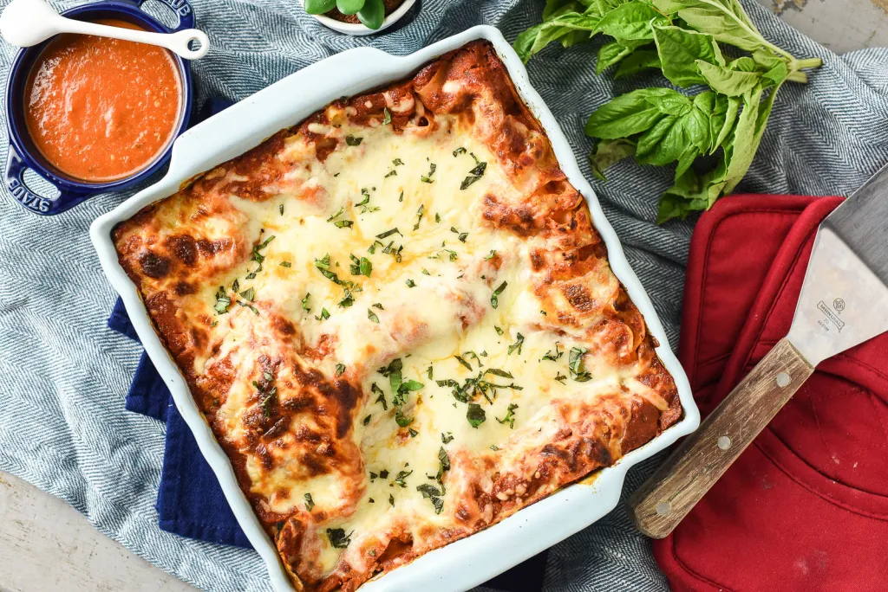

Lasagna Pomodoro

An easy lasagna recipe than saves me lots of time.
This recipe is simple and satisfies everyone in the family.
Ingredients
- 2 batches Pomodoro sauce
- 8 ounces no bake lasagna noodle sheets
- 1 cup ricotta cheese
- 1 egg
- 8 ounces fresh baby spinach, finely chopped
- 1 cup parmesan cheese, grated
- 3/4 teaspoon pepper
- 4 cups mozzarella cheese, shredded
- 1 1/4 cups Progresso™ chicken broth (from 32-oz container
- 1 bunch fresh basil salt & pepper to taste
Steps
- Preheat oven to 350 degrees F.
- Combine ricotta cheese and an egg in a small bowl and stir until combined. Fold in chopped baby spinach and about 1 teaspoon each of salt and pepper.
- Spray an 8X8″ baking dish with cooking spray or olive oil. Spread about 1/4 cup of pomodoro sauce on the bottom of the pan. Arrange 1 layer of lasagna noodle sheets on top of the sauce. Spread about 2 tablespoons of the ricotta mixture over the noodles and sprinkle with a 1/2 cup of mozzarella and a sprinkle of parmesan.
- Repeat layers until all of the noodles have been used. End with a layer of sauce followed by mozzarella and parmesan. Reserve remaining sauce to use as a garnish.
- Cover cop of baking dish with foil and place in the oven. Bake lasagna covered at 350 degrees for 30 minutes.
- Remove foil from pan. Increase oven temperature to 425 degrees F and return pan to oven. Continue to cook until lasagna is bubbling at the edges and the cheese on the top is golden brown.
- Remove pan from oven and allow lasagna to rest for 15 minutes before slicing and serving. Sprinkle top of the lasagna with fresh basil, salt and pepper. Serve with extra sauce and parmesan cheese on the side.